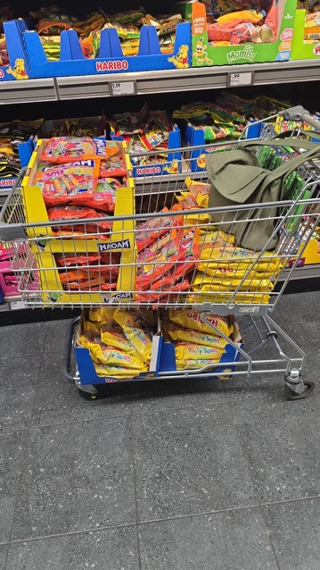

Unter dem Motto „Eichhörnchen und Igel, die sind schlau, kommen vom Gleisberg und rufen: Helau!" haben rund 130 Schüler:innen gemeinsam mit ihren Eltern den Gonsenheimer Rekrutenumzug fröhlich und bunt bereichert. Bereits Wochen zuvor wurde mit viel Kreativität und Begeisterung gebastelt, geschnitten und geklebt. Die liebevoll gestalteten Kostüme sorgten beim Umzug für viele bewundernde Blicke und waren echte Hingucker am Straßenrand.
Unser Förderverein hat auch in diesem Jahr das Wurfmaterial für den Umzug bereitgestellt. Mit großer Freude verteilten die Kinder während des Zuges Süßigkeiten und sorgten so für strahlende Gesichter bei den Zuschauer:innen.
Helau vom Gleisberg!